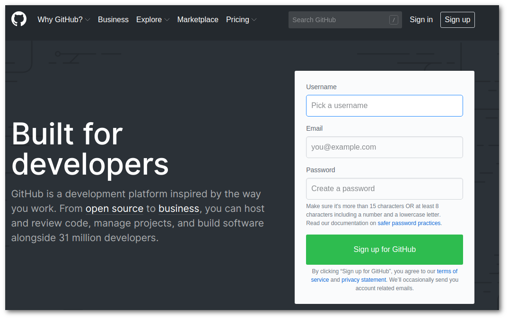

Created domingo 23 diciembre 2018
GitHub, un servicio para mantener tu código a salvo de peligro
¿Qué es GitHub? Se trata de un servicio para mantener el código a salvo mediante el uso de repositorios para cada proyecto. Crearse una cuenta no tiene costo para el úso personal y que además según es gratis de por vida*

Para visitar github
haz clic acá